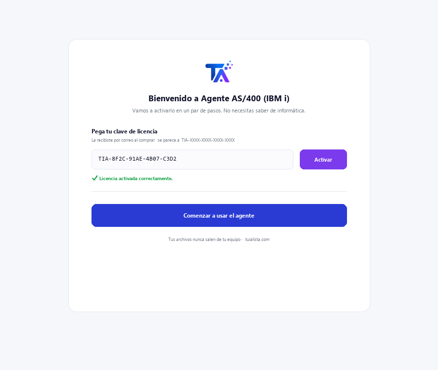
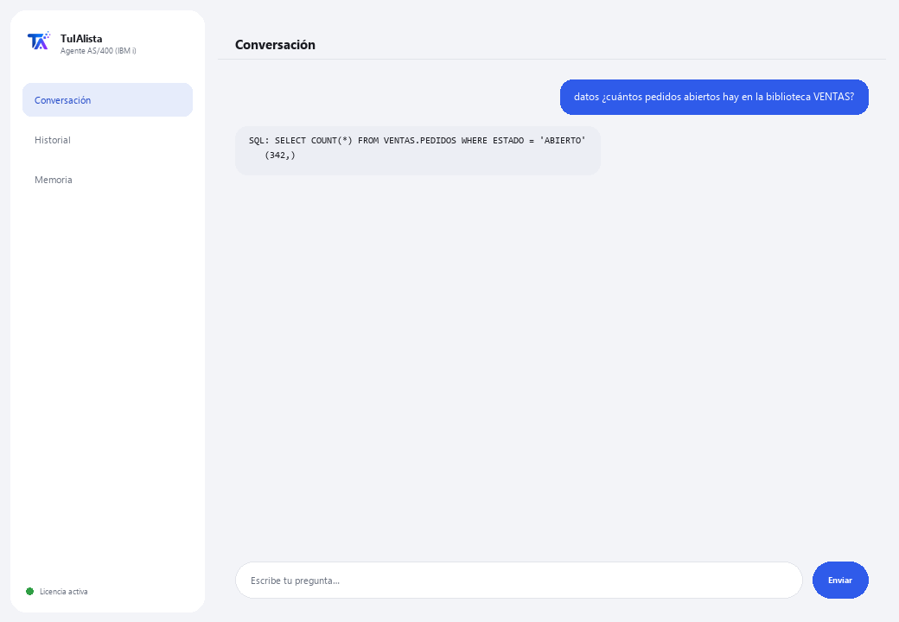

Agente AS/400 (IBM i) · Premium
Consulta tu DB2 for i en lenguaje natural y entiende código RPG/COBOL legacy — sin saber SQL ni el sistema.
¿Qué resuelve y qué necesitas?
El talento en IBM i es escaso a nivel mundial. Este agente es el puente entre tu sistema AS/400 legacy y el lenguaje natural: preguntas en español y te devuelve datos reales de DB2 for i, o le pasas un fuente RPG/COBOL y te lo explica sin tecnicismos.
- Necesitas: tu clave de licencia (TIA-XXXX-XXXX-XXXX-XXXX) y acceso al IBM i (host, usuario y contraseña con el IBM i Access ODBC Driver instalado). Pensado para un perfil técnico (TI / administración de IBM i).
- Primer resultado: instalas, activas tu licencia y, tras configurar la conexión, corres datos <tu pregunta>.
- Tu IBM i, sus datos y tu código nunca salen de tu red — la conexión y las consultas ocurren localmente.
soporte@tuialista.com o entra a tuialista.com/soporte — normalmente respondemos el mismo día hábil.1 Qué hace este agente
Resuelve dos dolores caros y difíciles de cubrir por la escasez mundial de talento en IBM i:
- Consulta de datos en DB2 for i sin saber SQL ni el sistema. Preguntas en lenguaje normal y el agente genera una consulta SELECT de DB2 for i (solo lectura), la ejecuta y te muestra el resultado.
- Entender código RPG y COBOL legacy. Le pasas un fuente RPG/COBOL y te lo explica en lenguaje claro: qué hace, qué datos maneja y qué produce, sin asumir que conoces el lenguaje.
Todo ocurre local, dentro de tu red: la conexión al IBM i y los datos nunca salen de tu infraestructura.
2 Instalación
Para Windows. Este agente tiene un paso extra respecto a los demás: la conexión al IBM i se configura aparte, no desde la ventana de activación.
Baja el instalador desde tuialista.com/descargar (agente AS/400) y ábrelo. Crea un acceso directo en tu escritorio con el logo — no requiere Python ni terminal.
Doble clic al ícono nuevo. Pega tu clave de licencia (te llegó por correo al comprar) y pulsa Activar. A diferencia de otros agentes, no te pide elegir una carpeta — este agente se conecta a una base de datos, no a archivos locales.
Instala el IBM i Access ODBC Driver (de IBM i Access Client Solutions) en el equipo donde corre el agente, y define las variables de entorno AS400_HOST, AS400_USER y AS400_PASSWORD con los datos de tu sistema. Este paso lo hace normalmente el área de TI.

3 Cómo usarlo
El agente abre una ventana de chat, como una app de mensajería — no es una pantalla negra de programador. Tiene dos comandos más salir:

> datos <pregunta>Escribes tu pregunta en lenguaje natural. El agente genera una consulta SELECT de DB2 for i (sintaxis BIBLIOTECA.TABLA), la valida como solo lectura y la ejecuta. Ej.: datos ¿cuántos pedidos abiertos hay en la biblioteca VENTAS? Los resultados se limitan a 100 filas por consulta.
> explica <archivo>Le pasas la ruta a un archivo con código fuente RPG o COBOL y te explica su propósito, los datos que maneja y lo que produce, sin tecnicismos innecesarios.
> salirTermina la sesión (también funciona exit).
4 Ejemplos de uso común
Un conteo operativo
datos ¿cuántas facturas se emitieron ayer?
Un total desde una tabla física
datos suma el importe de los pedidos de la biblioteca VENTAS de este mes
Explicar un programa que “nadie entiende”
explica /home/fuentes/CALCNOM.cbl — ideal cuando heredas miles de líneas de RPG/COBOL sin documentación.
Tender un puente a lo moderno
Usa datos para extraer cifras del IBM i y llevarlas a un reporte o tablero, sin exponer el sistema legacy a herramientas externas.
5 Preguntas frecuentes
¿Puede modificar o dañar los datos de producción del IBM i?
¿Necesito el driver de IBM sí o sí?
¿Los datos del IBM i salen de mi red?
¿Qué lenguajes de código puede explicar?
¿Genera SQL estándar o de DB2 for i?
¿Cuántas filas devuelve una consulta?
¿En qué idioma responde?
¿Por qué es “Premium”?
¿Puedo apuntar a varias bibliotecas?
¿El SQL generado siempre es correcto?
6 Solución de problemas
“Falta pyodbc y el driver 'IBM i Access ODBC Driver'”
No conecta al IBM i
“Solo se permiten consultas de lectura (SELECT)”
Dice “Licencia no válida” o pide reconectar
“No hay proveedores de IA configurados”
¿Ninguna de estas soluciones resolvió tu problema? Escríbenos directamente — con gusto lo revisamos contigo.
soporte@tuialista.com o entra a tuialista.com/soporte — normalmente respondemos el mismo día hábil.7 Privacidad y confidencialidad
Tu IBM i, sus datos y tu código nunca salen de tu red.
- El agente se conecta al IBM i localmente (dentro de tu red) y ejecuta las consultas ahí. Los resultados no se suben a ningún servidor.
- A la IA solo se le envía el esquema (nombres de tablas/columnas) y tu pregunta para redactar la consulta SELECT, o el fuente RPG/COBOL que le pidas explicar. Los datos que devuelve una consulta no se transmiten al motor de IA.
- Lo único que viaja por internet es: (1) una comprobación de que tu licencia está activa, y (2) el contexto necesario (esquema + pregunta, o el código a explicar) para generar la respuesta.